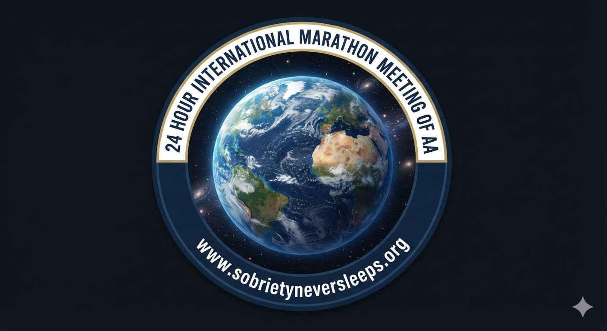
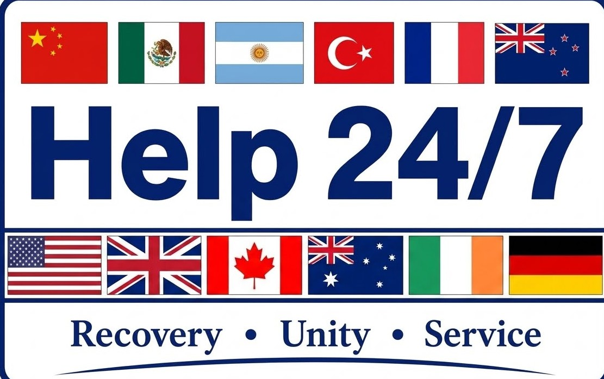
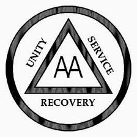
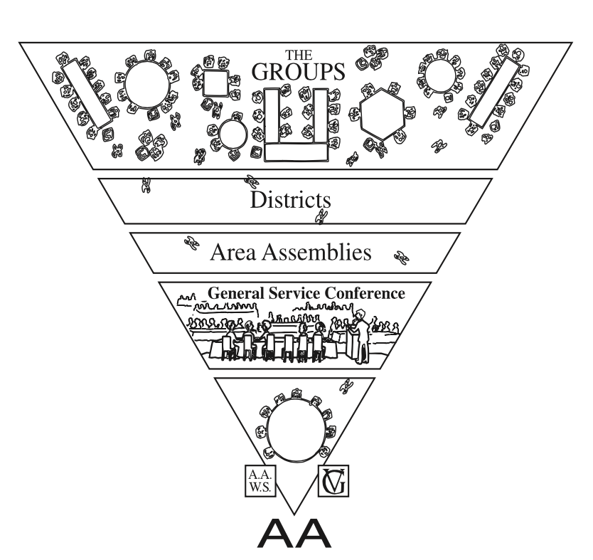

24 Hour International Marathon Meeting of AA
Where sobriety never sleeps.


The 24 HOUR INTERNATIONAL MARATHON MEETING OF ALCOHOLICS ANONYMOUS runs continuously around the world, around the clock. A fresh meeting begins at the top of each hour. We are an open meeting, and anyone with a desire to stop drinking is welcome to participate. We call on hands in the order they are raised. If you think you might have a drinking problem, click the Join Meeting button above.
Our online meeting has been running nonstop since April 20, 2020. At the commencement of the COVID pandemic, two newcomers from New Zealand with cell phones realized they needed fellowship with other alcoholics if they were to stay sober. The 24 Hour International Marathon Meeting has been carrying AA’s life-saving message of hope and recovery ever since.

Preamble
Alcoholics Anonymous is a fellowship of people who share their experience, strength, and hope with each other so that they may solve their common problem and help others recover from alcoholism. The only requirement for membership is a desire to stop drinking. There are no dues or fees for AA membership; we are self-supporting through our own contributions. AA is not allied with any sect, denomination, politics, organization, or institution; does not wish to engage in any controversy, neither endorses nor opposes any causes. Our primary purpose is to stay sober and help other alcoholics achieve sobriety.
The Twelve Steps
- We admitted we were powerless over alcohol—that our lives had become unmanageable.
- Came to believe that a Power greater than ourselves could restore us to sanity.
- Made a decision to turn our will and our lives over to the care of God as we understood Him.
- Made a searching and fearless moral inventory of ourselves.
- Admitted to God, to ourselves, and to another human being the exact nature of our wrongs.
- Were entirely ready to have God remove all these defects of character.
- Humbly asked Him to remove our shortcomings.
- Made a list of all persons we had harmed, and became willing to make amends to them all.
- Made direct amends to such people wherever possible, except when to do so would injure them or others.
- Continued to take personal inventory and when we were wrong promptly admitted it.
- Sought through prayer and meditation to improve our conscious contact with God as we understood Him, praying only for knowledge of His will for us and the power to carry that out.
- Having had a spiritual awakening as the result of these steps, we tried to carry this message to alcoholics, and to practice these principles in all our affairs.
The Twelve Traditions
- Our common welfare should come first; personal recovery depends upon AA unity.
- For our group purpose there is but one ultimate authority—a loving God as He may express Himself in our group conscience. Our leaders are but trusted servants; they do not govern.
- The only requirement for AA membership is a desire to stop drinking.
- Each group should be autonomous except in matters affecting other groups or AA as a whole.
- Each group has but one primary purpose—to carry its message to the alcoholic who still suffers.
- An AA group ought never endorse, finance, or lend the AA name to any related facility or outside enterprise, lest problems of money, property, and prestige divert us from our primary purpose.
- Every AA group ought to be fully self-supporting, declining outside contributions.
- Alcoholics Anonymous should remain forever nonprofessional, but our service centers may employ special workers.
- AA, as such, ought never be organized; but we may create service boards or committees directly responsible to those they serve.
- Alcoholics Anonymous has no opinion on outside issues; hence the AA name ought never be drawn into public controversy.
- Our public relations policy is based on attraction rather than promotion; we need always maintain personal anonymity at the level of press, radio, and films.
- Anonymity is the spiritual foundation of all our Traditions, ever reminding us to place principles before personalities.
A Declaration of Unity
Declaration of Unity
This we owe to AA's future: To place our common welfare first; to keep our Fellowship united. For on AA unity depend our lives and the lives of those to come.
I Am Responsible...
Toronto Responsibility Statement
I am responsible.
When anyone, anywhere, reaches out for help, I want the hand of AA always to be there. And for that I am responsible.
Contact Us
- Zoom: 292 371 2604 (no password needed) The meeting runs continuously 24 hours a day. Join the meeting and raise your virtual hand. We can help best if you talk to us.
- Email: the24hourmeeting@gmail.com
- Website: https://sobrietyneversleeps.org
International AA Websites
- Online Intergroup of AA: https://aa-intergroup.org
- AA World Services: https://www.aa.org
- Alcoholics Anonymous Great Britain: https://www.alcoholics-anonymous.org.uk
- Australia: https://aa.org.au
- Aotearoa New Zealand: https://aa.org.nz
- Canada: www.aatoronto.org
- Continental European Region: https://alcoholics-anonymous.eu
- Spain: www.alcoholicos-anonimos.org
- Japan: https://aatokyo.org
- Ireland: https://alcoholicsanonymous.ie
- Mexico: http://aamexico.org.mx
- Argentina: https://aa.org.ar
- South Africa: https://aasouthafrica.org.za
- India: https://www.aagsoindia.org
- Oregon (USA) Area 58, Online District 33: https://area58district33.org
- Morocco: https://aamaroc.net
Sobriety Suggestions, Sayings and Slogans
- Keep Coming Back
- Easy Does It
- Live and Let Live
- First Things First
- There is a Solution
- Get a Sponsor
- Take the Steps
- Join a Home Group
- If you don't take the first drink, you won't get drunk
- Love and Tolerance Is Our Code
- Rule 62 (Don't take yourself too damn seriously)
- The Three Essentials of Recovery: Honesty, Openmindedness, and Willingness
Do you have a drinking problem?
Twenty Questions
- Do you lose time from work due to drinking?
- Is drinking making your home life unhappy?
- Do you drink because you are shy with other people?
- Is drinking affecting your reputation?
- Have you ever felt remorse after drinking?
- Have you gotten into financial difficulties as a result of drinking?
- Do you turn to lower companions and an inferior environment when drinking?
- Does your drinking make you careless of your family's welfare?
- Has your ambition decreased since drinking?
- Do you crave a drink at a definite time daily?
- Do you want to drink the next morning?
- Does drinking cause you to have difficulty sleeping?
- Has your efficiency decreased since drinking?
- Is drinking jeopardizing your job or business?
- Do you drink to escape worries or trouble?
- Do you drink alone?
- Do you drink to build your self-confidence?
- Has your physician ever treated you for drinking?
- Have you ever been to a hospital or institution on account of drinking?
- Do you drink alone?
If you answered "yes" to 3 or more questions, it suggests you may have a drinking problem.
Source: Johns Hopkins University Hospital
AA's Two Questions
The book Alcoholics Anonymous (the Big Book) says that alcoholics are men and women who have lost the ability to control their drinking. AA does not pronounce anyone as being an alcoholic. The following passage from page 44 of the Big Book states: "In the preceding chapters you have learned something of alcoholism. We hope we have made clear the distinction between the alcoholic and the non-alcoholic. If, when you honestly want to, you find you cannot quit entirely, or if when drinking, you have little control over the amount you take, you are probably alcoholic. If that be the case, you may be suffering from an illness which only a spiritual experience will conquer."
AA Literature
Alcoholics Anonymous General Service Conference-approved Literature is available on the AA World Services website www.aa.org. Below is a list of suggested titles:
Books
- Alcoholics Anonymous (the Big Book)
- Twelve Steps and Twelve Traditions
- Alcoholics Anonymous Comes of Age
- Living Sober (practical suggestions from AA members)
Pamphlets
- Questions and Answers on Sponsorship
- Problems Other Than Alcohol
- The AA Group
- AA Tradition: How It Developed
- The Twelve Traditions Illustrated
Crisis and Mental Health Resources
Alcoholics Anonymous is not affiliated with any outside agency or organization. Below is a list of non-AA crisis resources.
If you or someone you know is in immediate danger, call emergency services right away or go to the nearest emergency department.
Immediate crisis support
- United States and Puerto Rico: 988 Suicide & Crisis Lifeline — call or text 988, or visit 988lifeline.org
- Canada: Talk Suicide Canada — call or text 45645, or visit talksuicide.ca
- Canada: Wellness Together Canada — call 1-866-585-0455 or visit wellness-together.ca
- United Kingdom: Samaritans — call 116 123 or visit samaritans.org
- Australia: Lifeline Australia — call 13 11 14 or visit lifeline.org.au
- New Zealand: Need to Talk? — call or text 1737 or visit 1737.org.nz
- SAMHSA National Helpline (U.S.) — 1-800-662-HELP (4357) for treatment referrals and mental health or substance use support
- Befrienders Worldwide — global directory of crisis support services: befrienders.org
Additional support
- Call 911 in the U.S. or your local emergency number if there is immediate danger or a medical emergency.
- Contact a local crisis center, community mental health clinic, urgent care center, or a trusted healthcare professional.
- Reach out to a trusted friend, family member, sponsor, or support person.
- If you are unsafe, leave the area, move to a public place, and seek help from emergency services or a nearby professional support resource.
Serenity Prayer
God, grant me the Serenity to accept the things I cannot change,
Courage to change the things I can,
and Wisdom to know the difference.
